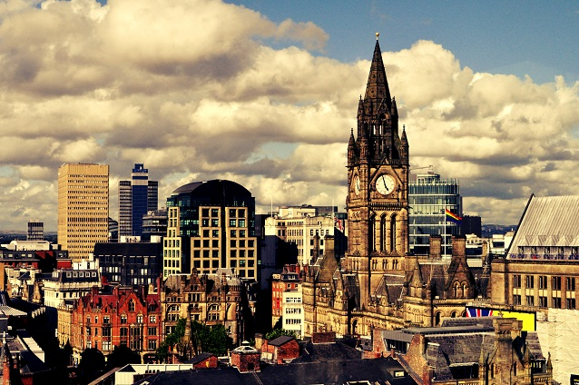
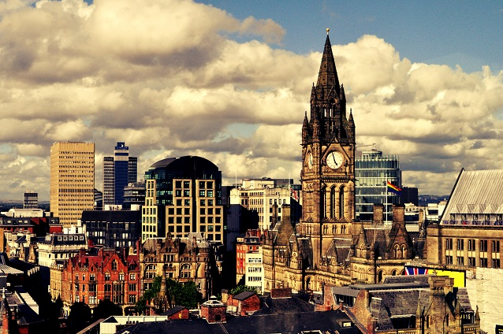
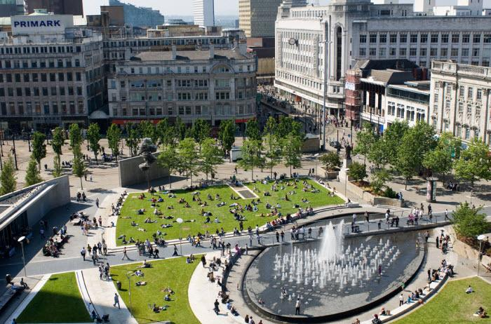
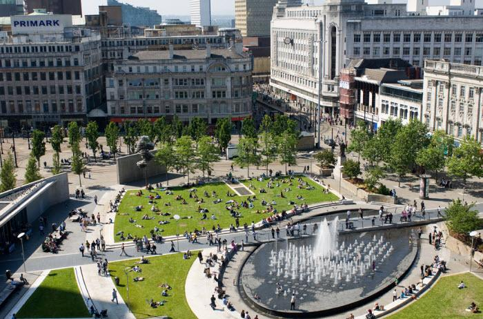
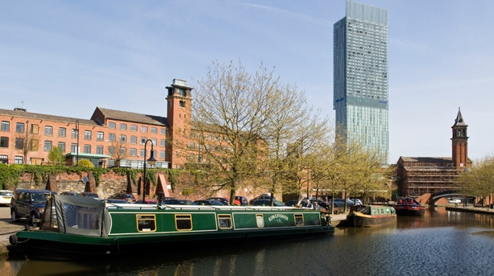
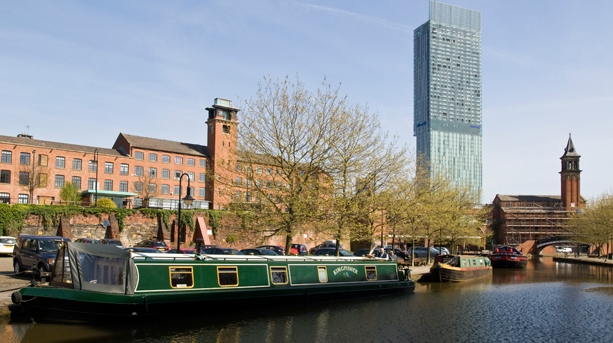

Manchester
Willkommen in Manchester
Manchester (460000 Ew.) ist weltweit immer noch als Industriestadt bekannt, die ihren Zenit im 19. Jh. erlebte.
Dieses Image ist jedoch lange überholt. In den letzten Jahren hat sich Manchester mächtig gemausert. Das Einkaufsviertel um St. Ann's Square wird immer schicker, die Gastronomieszene immer besser. Neue Museen wurden eröffnet und alte renoviert, die neu herausgeputzte Stadtmitte überrascht mit Architektur aus dem 19. Jh. (z.B. das Rathaus am Albert Square). Vor allem aber ist Manchester Heimat des legendären Fußballclubs Manchester United, dessen Stadion Touristenmagnet ist. Inselweit ist Manchester ebenso berühmt für sein Gayviertel um die Canal Street. Hier wurden Lagerhallen in hypermoderne Apartments umgebaut. Entlang dem Kanal haben sich in den letzten Jahren viele moderne Cafés, Clubs und Restaurants angesiedelt, die bis in den frühen Morgen geöffnet haben. Am Wochenende geht hier die Post ab, so beliebt ist das „pinke Viertel“ inzwischen.
Das Stadtbild wird von Gebäuden aus unterschiedlichen Stilepochen von der Viktorianischen Architektur bis zur Moderne geprägt. Außerhalb des Stadtzentrums sind Fabriken der Baumwollindustrie erhalten geblieben, die heute als Wohnungen oder Büros genutzt werden. Charakteristisch für Manchester ist die häufige Verwendung von rotem Backstein als Baustoff. Sehenswerte Gebäude sind die gotische Kathedrale von Manchester (erbaut 1421 im Perpendikular-Stil; Turm 1876 wiederaufgebaut), die Getreidebörse (Corn Exchange, erbaut 1897, heute das Einkaufszentrum The Triangle) und das neugotische Rathaus von Manchester, das 1877 von Alfred Waterhouse entworfen wurde. Das 1830 erbaute Empfangsgebäude des 1839 erbauten Bahnhofs Liverpool Road ist das älteste erhaltene der Welt.
Sehenswertes vor Ort
-
Museum of Science and Industry
Das Industriemuseum wurde an der Stelle des ältesten Bahnhofs der Welt errichtet. In zwölf Galerien werden zahlreiche technische Entwicklungen ausgestellt: Wasser- und Dampfkraft betriebene Maschinen aus der Zeit der Textilindustrie, alte Dampfloks, Oldtimer sowie Computer der ersten Generation.
-
Manchester United Football Club
Der Fußballclub gehört weltweit zu den berühmtesten Markennamen. Spielt die Mannschaft in der Stadt, kommen Tausende Besucher aus der ganzen Welt zum Match. Es gibt ein Clubmuseum, und es werden Führungen durch das Stadion angeboten. Museum und Führungen tgl. 9.30-17 Uhr | Kombiticket £ 10 | Reservierung empfohlen, Tickets für Spiele und Führungen unter www.manutd.com
-
Salford Quays
Der alte Binnenhafen im Stadtteil Salford hat mit zwei Attraktionen ein ganz neues Image bekommen. Das Imperial War Museum North (Tel. 0161/8364000 | www.iwm.org.uk | Eintritt frei), ein spektakuläres Werk des international renommierten Daniel Libeskind, beschäftigt sich auf sensible Weise mit dem Thema „Mensch und Krieg“.
-
Museum of Science
and TechnologyErbaut um die 1975 stillgelegte älteste Eisenbahnstation der Welt. Der Knüller der Ausstellung ist die Power Hall mit der weltgrößten Sammlung von Dampfmaschinen. Ein Museum zum Anfassen und Ausprobieren. Tgl. 10-17 Uhr | Eintritt frei | Lower Byron Street | www.msim.org.uk
Entdecken Sie die Schönheit Manchesters

 

 

 
